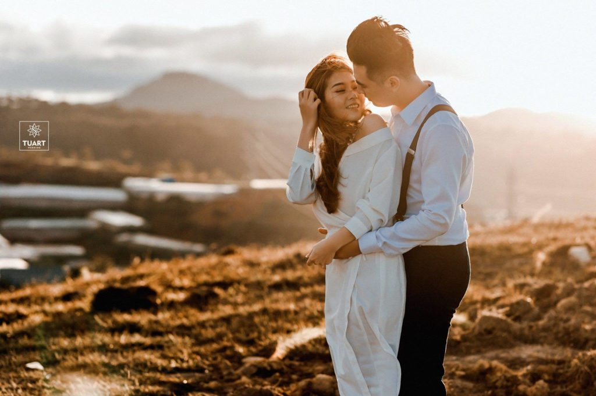
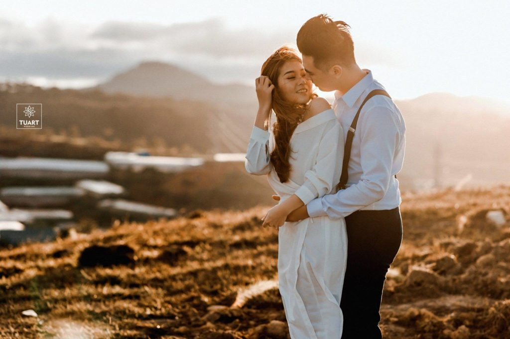

Giới Thiệu
TuArt Wedding – Studio ảnh cưới đẹp nhất tại Việt Nam
TuArt Group – Đơn vị đầu tiên có hệ sinh thái All in One tại Việt Nam, tiền thân là một nhóm nhiếp ảnh gia đam mê máy ảnh và ảnh bắt đầu hoạt động Freelance từ năm 2013.
Hơn 7 năm hoạt động trong lĩnh vực chụp ảnh cưới, TuArt Wedding đã và đang phát triển với hệ thống chi nhánh toàn quốc trải dài từ Bắc vào Nam, với hơn 500 nhân sự bao gồm nhiếp ảnh gia chuyên nghiệp, make-up artist nổi tiếng và đội ngũ designer với công nghệ blend màu độc quyền.
 

Hợp tác đối tác Hàn Quốc – Muhly Group
Là đơn vị đầu tiên có hệ sinh thái All in One tại Việt Nam: Studio, học viện đào tạo nghệ thuật, xưởng in, phim trường trong nhà và ngoài trời, thương hiệu váy cưới cao cấp. Không gian tạo nên sự thoái mái, đa dạng và rất tiện lợi khi sử dụng dịch vụ tại đây. TuArt Academy – Học viện đào tạo nghệ thuật được sáng lập bởi những người thực sự tâm huyết với nghề ở Việt Nam hàng năm đào tạo ra đội ngũ nhân lực thực sự chuyên nghiệp góp phần cho sự phát triển của ngành nghệ thuật nước nhà và đáp ứng nhu cầu về nghề của người dân Việt Nam.
Show diễn váy cưới
Sau hơn 7 năm hoạt động Freelance, TuArt Wedding chính thức khai trương vào ngày 17.09.2012 tại Tầng 3, số 481 Kim Mã, Ba Đình, Hà Nội. Trong căn phòng vẻn vẹn 25m2, chúng tôi đã có cơ hội đem những hình ảnh tinh tế với tiêu chí khắt khe nhất tới các cặp uyên ương trên toàn lãnh thổ Việt Nam: Hà Nội, Mộc Châu, Ba Vì, Tam Đảo, Vân Đồn, Đà Nẵng, Nha Trang, Phan Thiết, Hồ Chí Minh, Cần Thơ… và rất nhiều lần được mời đi chụp tại Pháp, Ý, Hà Lan, Hy Lạp (Thiên đường chụp ảnh cưới trên thế giới) – Xem thêm: https://tuarts.net/album/ ).
Sau hơn 2 năm hoạt động tại Tầng 3, số 481 Kim Mã, Ba Đình, Hà Nội. Ngày 24.01.2014, TuArt Wedding chính thức chuyển sang địa điểm mới tại 27D Quốc Tử Giám, Đống Đa, Hà Nội. Tại đây chúng tôi có đầy đủ Phòng chụp chuyên nghiệp; Phòng váy rộng rãi với số lượng váy cưới đẹp hơn, nhiều hơn…
Ngày 12.08.2015, TuArt Nguyen chính thức chuyển sang địa điểm mới: 17 ĐẠI CỒ VIỆT ( gần ngã tư phố Huế – Đại Cồ Việt) – HAI BÀ TRƯNG – HÀ NỘI.
Đến ngày 25.06.2016, TuArt Wedding khai trương chi nhánh đầu tiên tại thành phố biển đáng sống nhất Việt Nam – Thành phố Đà Nẵng với hệ sinh thái All in one đầu tiên tại Việt Nam: Studio, học viện đào tạo nghệ thuật, xưởng in, phim trường trong nhà và ngoài trời, thương hiệu váy cưới cao cấp. Không gian tạo nên sự thoái mái, đa dạng và rất tiện lợi khi sử dụng dịch vụ tại đây.
Tháng 12.2016 Khai trương chi nhánh thứ 2 tại số 338, Phố Huế, Hai Bà Trưng, Hà Nội. Tại đây TuArt đã xây dựng được 1 không gian phim trường trong nhà lớn nhất tọa lạc giữa trung tâm Hà Nội rộng hơn 500m2 đáp ứng nhu cầu chụp ảnh cưới, chụp ảnh gia đình và chụp ảnh cho bé.
Ngày 11.07.2018 TuArt Wedding khai trương chi nhánh đầu tiên tại thành phố nhộn nhịp bậc nhất Việt Nam – thành phố Hồ Chí Minh. Khẳng định TuArt Wedding là đơn vị thương hiệu ảnh cưới có tầm ảnh hưởng lớn nhất tại Việt Nam với hệ sinh thái cưới hỏi All in one ĐẦU TIÊN tại Việt Nam
Ngày 07.11.2018 TuArt Wedding khai trương chi nhánh đầu tiên tại thành phố thơ mộng bậc nhất Việt Nam – thành phố Đà Lạt Khẳng định TuArt Wedding là đơn vị thương hiệu ảnh cưới có tầm ảnh hưởng lớn nhất tại Việt Nam với hệ sinh thái cưới hỏi All in one ĐẦU TIÊN tại Việt Nam
Ngày 10.10.2020 TuArt Wedding khai trương chi nhánh đầu tiên tại thành phố Hải Dương Khẳng định TuArt Wedding là đơn vị thương hiệu ảnh cưới có tầm ảnh hưởng lớn nhất tại Việt Nam với hệ sinh thái cưới hỏi All in one ĐẦU TIÊN tại Việt Nam
Ngày 15.04.2021 TuArt Wedding khai trương chi nhánh thứ 2 tại thành phố thơ mộng bậc nhất Việt Nam – thành phố Đà Lạt. Khẳng định TuArt Wedding là đơn vị thương hiệu ảnh cưới có tầm ảnh hưởng lớn nhất tại Việt Nam với hệ sinh thái cưới hỏi All in one ĐẦU TIÊN tại Việt Nam
Trụ sở TuArt Wedding

Video Pre Wedding: Ngọc Sơn – Mỹ Linh